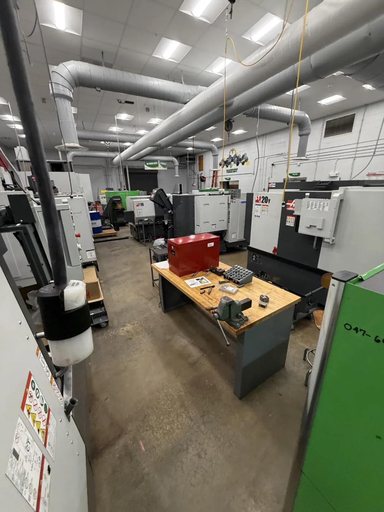

FEATURED CASE STUDY
ACTUAL PROJECT PHOTOGRAPHY // CNC TRAINING CELLS
01 / MANUFACTURING & CAPITAL PROGRAMS
Advanced Manufacturing Modernization
Coordinating capital equipment, instructional integration, vendor relationships, and a 104-attendee manufacturing showcase.